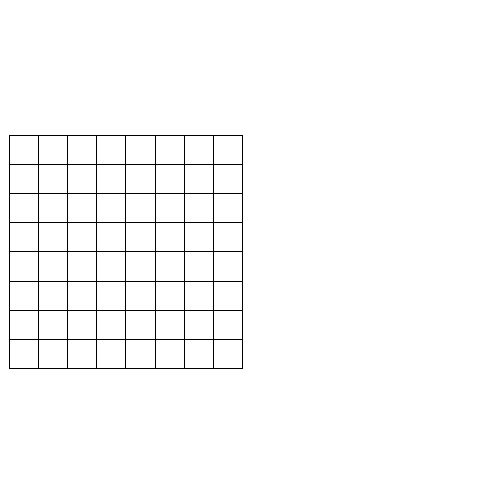

데이터 과학을 위한 R 알고리즘
최단 도시 연결(Minimal Spanning Tree)
1. 가난한 지도 제작자 문제 1
많은 최적화 문제는 특정 사건이 동일 시간에 발생할 수 없거나, 집합 객체에 소속된 구성원이 서로 인접할 수 없는 상황을 포함한다. 예를 들어, 수업 시간표나 회의 일정표를 작성하는 사람은 관련된 모든 사람의 제약조건을 만족시키는 문제에 맞닥드리게 된다. 이러한 어려움 중의 상당부분은 지도 색책 문제로 귀결된다. 이 문제에서 지도에 있는 국가들, 국경을 맞대고 있는 나라를 다른 색깔을 정해서 칠해야 한다.
지도 제작자가 가난해서, 크래용을 많이 사용할 수 없다. 그래서, 가능한 적은 수의 크래용을 사용하는 아이디어를 내보자.
예를 들어, 다음 지도에는 나라가 네개 있다. 만약 Northland를 빨간색으로 칠한다면, Westland와 Eastland는 빨간색이 될 수 없다. 왜냐하면, Northland와 국경을 맞대고 있어서 경계를 구별할 수 없기 때문이다. Westland를 녹색으로 칠할 수 있고 Eastland도 녹색으로 칠하는 것이 용인된다. 왜냐하면 Westland와 국경을 맞대고 있지 않기 때문이다. (만약 두 나라가 한 점에서 만난다면, 국경을 공유하는 것으로 간주되지 않아서, 동일한 색깔을 칠할 수 있다.) Southland를 빨간색으로 색칠해서 지도상에 단지 두가지 색으로 색칠을 끝마칠 수 있다.

2. 체스판 색칠 2
MapColoring 팩키지가 있어 이를 활용하여 지도제작자로서 최소의 색상을 활용하여 색깔을 칠해보자. 이에 앞서 가장 간단한 체스판을 대상으로 생색을 칠해보자.
sp 팩키지 GridTopology 함수를 활용하여 가로 8, 세로 8 크기를 갖는 체스판 격자를 생성한다. 그리고 나서, MapColoring 팩키지 getNColors 함수로 해당 체스판에 필요한 최소 색상을 파악하고, 해당 체스판 각 격자에 어떤 색상이 필요한지 색칠해 나간다. 그리고, MapColoring 팩키지의 getOptimalContrast 함수를 활용하여 색상에 대해 최대한 식별이 될 수 있도록 체스판을 도색한다.
# 0. 환경설정 --------------------------
# devtools::install_github("hunzikp/MapColoring")
library(MapColoring)Error in library(MapColoring): there is no package called 'MapColoring'
library(sp)
# 1. 체스판 만들기 --------------------------
chess_gt <- GridTopology(c(0,0), c(1,1), c(8,8))
chess_sg <- SpatialGrid(chess_gt)
chess_board <- as(as(chess_sg, "SpatialPixels"), "SpatialPolygons")
# 2. 체스판 색칠 --------------------------
## 2.1. 색칠 갯수
(chess_ncol <- getNColors(chess_board))Error in getNColors(chess_board): could not find function "getNColors"
## 2.2. 체스판 색칠 인덱스
(chess_coloring_idx <- getColoring(chess_board))Error in getColoring(chess_board): could not find function "getColoring"
## 2.3. 체스판 색칠 --------------------------
candidate_colors <- RColorBrewer::brewer.pal(11, "Paired")
optimal_colors <- getOptimalContrast(x=chess_board, col=candidate_colors)Error in getOptimalContrast(x = chess_board, col = candidate_colors): could not find function "getOptimalContrast"
par(mar=c(0,0,0,0))
par(mfrow=c(1,2))
plot(chess_board)
plot(chess_board, col=optimal_colors)Error in plot.SpatialPolygons(x, ...): object 'optimal_colors' not found
